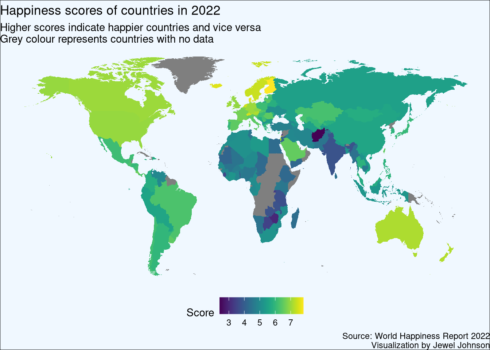

In this post we will do some exploratory data visualizations using data from The World Happiness Report 2022. You can download the .csv file from here.
World Happiness Report 2022 shows which are the happiest countries for the year 2022. By statistically analyzing six key parameters, each country is given a score (which is called ladder score within the dataset). The higher the score, the happier the country is and vice versa. The six key parameters which are taken into analysis for determining the score are;
Gross domestic product per capita
Social support
Healthy life expectancy
Freedom to make your own life choices
Generosity of the general population
Perceptions of internal and external corruption levels.
Finland is ranked first among 149 countries with an overall score of 7.82. Despite COVID 19 wrecking havoc around the world, citizens of Finland have persevered through it and they have been maintaining first rank since 2016. Afghanistan is at the lowest rank with a score of 2.40. With complications from COVID 19 pandemic and the Taliban take over, Afghanistan is going through one of the worst humanitarian crisis in human history and the ranking reflects it.
Plotting a world map
We will plot a world map with a scalable colour palette based on the ladder score where greater scores indicated happier countries and vice versa.
In short what we we will be doing is, we are going to join the World Happiness Report 2021 dataset with the map data and plot it using the ggplot2 package. The map_data() function helps us easily turn data from the {maps} package in to a data frame suitable for plotting with ggplot2.
# required packageslibrary(readr)library(tidyverse)library(maps)library(viridis)# load the dataset which you have downloaded# please change the location to where your downloaded file is kepthap_pre<-read.csv("datasets/2022.csv")# renaming column names of ease of usecolnames(hap_pre)[2]<-"country"colnames(hap_pre)[3]<-"score"hap_pre<-hap_pre[-147,]# the score values are separated by commas# let us change that to dotshap_pre$score<-scan(text=hap_pre$score, dec=",", sep=".")# selecting country and score columnshap<-hap_pre%>%select(country,score)# removing special characters in dfhap$country<-gsub("[[:punct:]]","",as.character(hap$country))# loading mapmap_world<-map_data('world')# remove Antarcticamap_world<-map_world[!map_world$region=="Antarctica",]# checking which country names are a mismatch between map data and the downloaded datasetanti_join(hap, map_world, by =c("country"="region"))
country score
1 United States 6.977
2 United Kingdom 6.943
3 Czechia 6.920
4 Taiwan Province of China 6.512
5 North Cyprus 5.467
6 Hong Kong SAR of China 5.425
7 Congo 5.075
8 Palestinian Territories 4.483
9 Eswatini Kingdom of 4.396
You can see that some country names are a mismatch with the map data. So we will attempt to fix it.
# display all country names in the dataset# useful to locate correct country names#map_world %>% group_by(region) %>% summarise() %>% print(n = Inf)# correcting country names# here we are matching the country names of downloaded dataset with the map datacorrect_names<-c("United States"="USA",
"United Kingdom"="UK",
"Czechia"="Czech Republic",
"Taiwan Province of China"="Taiwan",
"North Cyprus"="Cyprus",
"Congo"="Republic of Congo",
"Palestinian Territories"="Palestine",
"Eswatini Kingdom of"="Swaziland")# recoding country names hap2<-hap%>%mutate(country =recode(country, !!!correct_names))# joining map and the dataworld_hap<-left_join(map_world, hap2, by =c("region"="country"))# creating a function to add line in text, for the captionaddline_format<-function(x,...){gsub(',','\n',x)}# plotting the world mapggplot(world_hap, aes(long, lat))+geom_polygon(aes(fill =score, group =group))+scale_fill_viridis(option ="viridis")+theme_void()+theme(plot.background =element_rect(fill ="aliceblue"),
legend.position="bottom")+labs(title ="Happiness scores of countries in 2022",
subtitle =addline_format("Higher scores indicate happier countries and vice versa,Grey colour represents countries with no data"),
fill ="Score",
caption =addline_format("Source: World Happiness Report 2022,Visualization by Jewel Johnson"))

Citation
BibTeX citation:
@online{johnson2022,
author = {Jewel Johnson},
title = {The {World} {Happiness} {Report} 2021},
date = {05/20/2022},
langid = {en}
}
For attribution, please cite this work as:
Jewel Johnson. 5AD–20AD. “The World Happiness Report 2021.”
5AD–20AD.
Source Code
---title: "The World Happiness Report 2021"description: "Plotting an interactive map and more"author: "Jewel Johnson"date: "05-20-2022"format: html: toc: false toc-title: On this page html-math-method: katex number-sections: false smooth-scroll: true highlight-style: github code-link: true code-tools: truecitation: trueexecute: warning: falsecategories: [leaflet, ggstatsplot]image: "world.jpg"---## Getting the dataIn this post we will do some exploratory data visualizations using data from [The World Happiness Report 2022](https://worldhappiness.report/ed/2022/). You can download the `.csv` file from [here](https://www.kaggle.com/datasets/mathurinache/world-happiness-report?select=2022.csv).**World Happiness Report 2022** shows which are the happiest countries for the year 2022. By statistically analyzing six key parameters, each country is given a score (which is called `ladder score` within the dataset). The higher the score, the happier the country is and vice versa. The six key parameters which are taken into analysis for determining the score are;1. Gross domestic product per capita2. Social support3. Healthy life expectancy4. Freedom to make your own life choices5. Generosity of the general population6. Perceptions of internal and external corruption levels.Finland is ranked first among 149 countries with an overall score of 7.82. Despite COVID 19 wrecking havoc around the world, citizens of Finland have persevered through it and they have been maintaining first rank since 2016. Afghanistan is at the lowest rank with a score of 2.40. With complications from COVID 19 pandemic and the Taliban take over, Afghanistan is going through one of the worst humanitarian crisis in human history and the ranking reflects it.## Plotting a world mapWe will plot a world map with a scalable colour palette based on the ladder score where greater scores indicated happier countries and vice versa.In short what we we will be doing is, we are going to join the World Happiness Report 2021 dataset with the map data and plot it using the `{ggplot2}` package. The `map_data()` function helps us easily turn data from the `{maps}` package in to a data frame suitable for plotting with ggplot2.```{r}# required packageslibrary(readr)library(tidyverse)library(maps)library(viridis)# load the dataset which you have downloaded# please change the location to where your downloaded file is kepthap_pre <-read.csv("datasets/2022.csv")# renaming column names of ease of usecolnames(hap_pre)[2] <-"country"colnames(hap_pre)[3] <-"score"hap_pre <- hap_pre[-147,]# the score values are separated by commas# let us change that to dotshap_pre$score <-scan(text=hap_pre$score, dec=",", sep=".")# selecting country and score columnshap <- hap_pre %>%select(country,score)# removing special characters in dfhap$country <-gsub("[[:punct:]]","",as.character(hap$country))# loading mapmap_world <-map_data('world')# remove Antarcticamap_world <- map_world[!map_world$region =="Antarctica",]# checking which country names are a mismatch between map data and the downloaded datasetanti_join(hap, map_world, by =c("country"="region"))```You can see that some country names are a mismatch with the map data. So we will attempt to fix it.```{r}#| column: page# display all country names in the dataset# useful to locate correct country names#map_world %>% group_by(region) %>% summarise() %>% print(n = Inf)# correcting country names# here we are matching the country names of downloaded dataset with the map datacorrect_names <-c("United States"="USA","United Kingdom"="UK","Czechia"="Czech Republic","Taiwan Province of China"="Taiwan","North Cyprus"="Cyprus","Congo"="Republic of Congo","Palestinian Territories"="Palestine","Eswatini Kingdom of"="Swaziland")# recoding country names hap2 <- hap %>%mutate(country =recode(country, !!!correct_names))# joining map and the dataworld_hap <-left_join(map_world, hap2, by =c("region"="country"))# creating a function to add line in text, for the captionaddline_format <-function(x,...){gsub(',','\n',x)}# plotting the world mapggplot(world_hap, aes(long, lat)) +geom_polygon(aes(fill = score, group = group)) +scale_fill_viridis(option ="viridis") +theme_void() +theme(plot.background =element_rect(fill ="aliceblue"),legend.position="bottom") +labs(title ="Happiness scores of countries in 2022",subtitle =addline_format("Higher scores indicate happier countries and vice versa,Grey colour represents countries with no data"),fill ="Score",caption =addline_format("Source: World Happiness Report 2022,Visualization by Jewel Johnson"))```